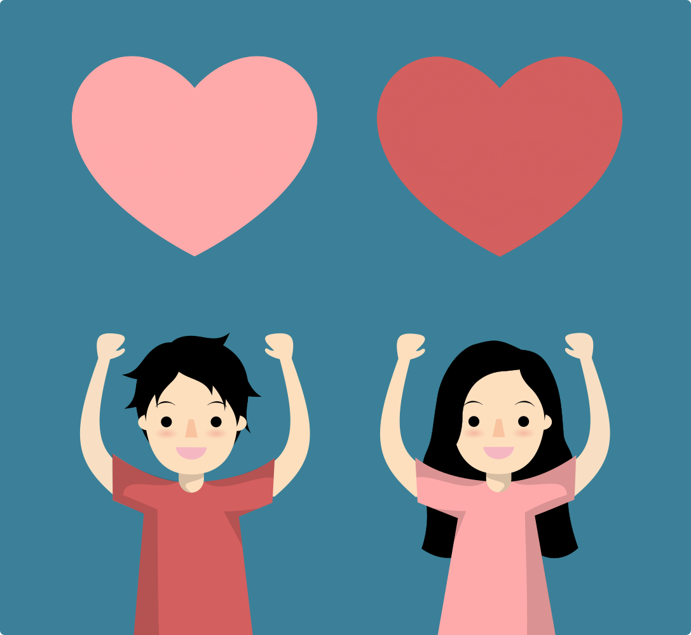

As part of my project team for a human-computer interaction course, I was in charge of creating illustrations for a web application, called Acts of Kindness, which aimed at helping inspire individuals to do more kind things in their everyday life. My goal was to try and create a unique visual brand identity that also captured the nature of Acts of Kindness.
Since our application was meant for our users to help others I felt it would be appropriate to have people represented in the background holding up hearts to inspire love and kindness. Because we were in a time crunch, I used a character illustration SVG that I had already completed of myself in my inventory. I used this same image to create a stereotypical "guy" version of the same character and created heart shapes above the two characters.
For the web application's data visualization of how many goals a user completed, our team wanted to keep the "red heart" theme consistent. As such, I created a transparent object with an outer gloss to give the effect of a heart being filled up. I chose to add more detail and emphasis to this heart illustration compared to the background hearts because it is the first data visualization the user sees upon login. Additionally, I created a total of 10 different hearts with varying fills that change depending how close a user is to reaching the goal.
If given more time, I would have also liked to create multiple characters of differing race, genders, cultures, age, abilties, etc. because our web application is meant for everyone to use. Our team could have used javascript to allow these character illustrations to randomize upon changing page navigations. I feel like many individuals, including myself, appreciate being able to identify with a representation found on the web or in media. One of my personal goals is to try and be more inclusive and understanding of others' experiences and I want those values to show through my work as well.